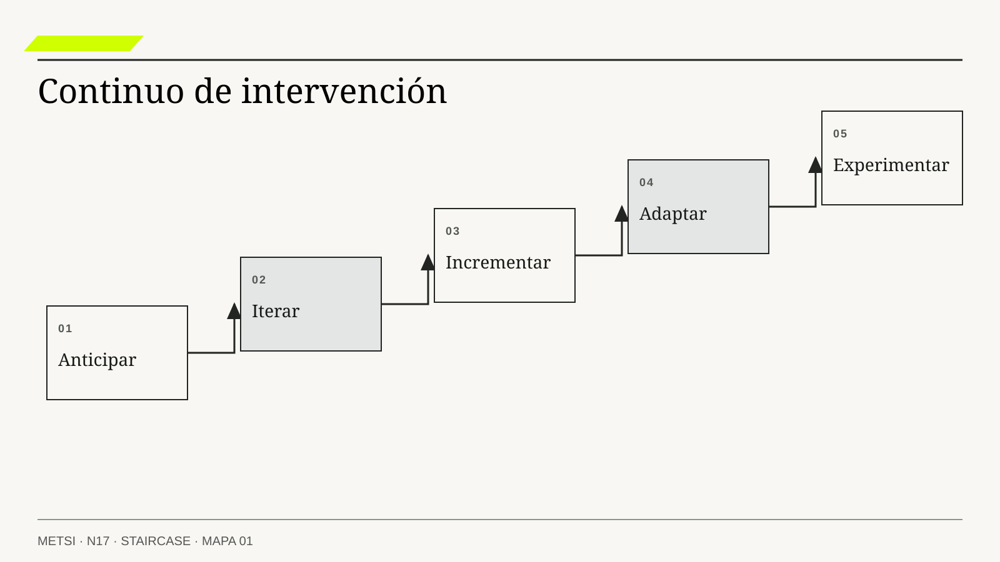

Barry Boehm
Vinculó ciclos de desarrollo con reducción progresiva de riesgo.

N17 separa las lógicas de intervención por el modo en que producen conocimiento y compromiso.
Lógicas predictivas, iterativas, incrementales, adaptativas y experimentales
Ruta de lectura: problema, distinciones, decisiones, prueba, transferencia y preparación.

Nota. SIN NUM. identifica aparatos de orientación y referencia.
Seis voces para ampliar, contrastar y discutir N17.
Vinculó ciclos de desarrollo con reducción progresiva de riesgo.

Mostró los límites de una secuencia lineal sin retroalimentación.

Explicó la reflexión durante la acción profesional.

Investigó las condiciones que permiten aprender de errores, incertidumbre y resultados inesperados sin ocultarlos.

Distinguió contextos de decisión que exigen diagnóstico, aprendizaje emergente o acción inmediata.

Vinculó respuesta al cambio, entrega frecuente y retroalimentación técnica en el desarrollo adaptativo.
N17 no resume estas fuentes ni las convierte en receta. Las pone en tensión para construir juicio profesional.
¿Cómo elegir una forma de intervención cuando algunas decisiones pueden anticiparse, otras necesitan aprendizaje y varias no admiten el mismo costo de error?

Una estrategia puede combinar lógicas si cada una conserva propósito, evidencia y autoridad.
Hotel Horizonte aprueba un proyecto para reducir la espera de ingreso. El plan define nueve meses, alcance estable, proveedor, presupuesto y una secuencia de análisis, configuración, pruebas y despliegue. Cada hito se cumple. El nuevo módulo entra en producción el día previsto y registra el mismo estado que ya utilizaba el PMS: habitación entregable.
Antes de aprobar el despliegue, HH-16 ya había mostrado que “entregable” se usaba para condiciones distintas en Housekeeping, Recepción y Comercial, y había reservado el término para la combinación de preparada, asignable, accesible y confirmada. El proyecto conserva la etiqueta antigua del PMS sin implementar esas correspondencias porque cambiarlas afectaría integraciones y reportes. La solución cumple el alcance contractual y acelera la propagación de una ambigüedad conocida. El primer fin de semana, las confirmaciones salen antes y también aumentan las reasignaciones, las esperas y las compensaciones.
La explicación fácil culpa al enfoque predictivo. Sin embargo, varias decisiones sí necesitaban anticipación: contratos, ventanas de mantenimiento, migración, capacitación y continuidad operativa. La falla no estuvo en planificar, sino en aplicar una única lógica a preguntas con incertidumbres y consecuencias diferentes. La semántica requería iteración; el flujo podía entregarse por incrementos; la regla comercial necesitaba adaptación; una nueva promesa exigía experimento controlado.
El equipo reabre el trabajo sin declarar fracaso total. Conserva compromisos irreversibles y transforma otros. Establece una línea de base técnica para la migración, una serie de prototipos para las reglas, un incremento limitado a dos pisos y un experimento con confirmaciones sólo cuando cerradura, asignación y accesibilidad están verificadas. Cada tramo produce evidencia para la decisión siguiente.
La estrategia deja de nombrarse por una etiqueta global. En una misma intervención conviven cadencias, grados de anticipación y mecanismos de aprendizaje. El criterio no es qué método resulta moderno, sino qué se sabe, cuánto cuesta equivocarse, qué puede revertirse y cuándo existe evidencia suficiente para comprometer más recursos.
N17 abre el Bloque D con esa disciplina. Recibe de HH-16 una cartera de modelos coherente y contradicciones gobernadas. Su tarea no es volver a modelar, sino diseñar la lógica de intervención que convierte incertidumbre en decisiones revisables.

HH-16 dejó cuatro estados diferenciados para una habitación: preparada, asignable, accesible y confirmada. En HH-17, Camila Duarte propone adelantar la confirmación comercial, Mariela Benítez advierte que una habitación preparada todavía puede carecer de cerradura operativa y Lucía Ferreyra pide no prometer lo que Recepción no puede entregar. La contradicción no se resuelve eligiendo una etiqueta metodológica para todo el proyecto.

Elena Acosta autoriza una ruta predictiva para contratos, migración y ventana de despliegue, porque esas decisiones comprometen presupuesto y continuidad. Federico Müller organiza iteraciones semanales sobre la regla de estados. Ricardo Sosa limita el primer incremento a dos pisos y conserva un circuito manual para las excepciones. La confirmación anticipada se trata como experimento: sólo alcanza a reservas sin cambio de habitación, con consentimiento operativo y posibilidad de interrupción inmediata.
HH-17 conserva cinco evidencias separadas: línea de base de reasignaciones, registro de discrepancias entre PMS y cerraduras, tiempo hasta asignación, compensaciones y relato de cada excepción. La puerta de ampliación exige que los estados conserven significado entre áreas, que la tasa de reparación no empeore y que Recepción pueda detener el flujo sin depender de Tecnología. Si alguna condición falla, el incremento continúa en observación y la promesa comercial no se expande.
La decisión es revisable porque cada lógica tiene propósito, autoridad y salida propios. HH-18 recibirá el mapa de decisiones junto con una pregunta pendiente: qué parte de la protección proviene de una obligación vigente y qué parte es una solución heredada que puede sustituirse sin perder memoria ni derechos.
N17 separa las lógicas de intervención por el modo en que producen conocimiento y compromiso. Una estrategia puede combinarlas, pero cada combinación debe conservar propósito, evidencia y autoridad. El mapa resultante prepara decisiones locales; no reemplaza la composición metodológica, los hitos ni la secuencia integral que desarrollará N20.

N16 entrega una cartera de modelos con contradicciones clasificadas, responsables y condiciones de revisión. N17 toma esa evidencia para decidir qué compromisos conviene anticipar, qué partes pueden entregarse y dónde hace falta aprender antes de ampliar.
N18 recibirá decisiones que ya no pueden evaluarse sin considerar legado, regulación y documentación. N17 no decide qué retirar ni qué obligación prevalece.
El argumento combina cuatro tradiciones que cumplen funciones distintas. Riesgo y ciclo de vida ayudan a graduar compromiso; empirismo y agilidad organizan aprendizaje; reflexión y complejidad advierten cuándo la acción modifica el problema; gobierno y estándares fijan autoridad, evidencia y salida. Ninguna fuente determina por sí sola qué lógica corresponde al episodio.
Boehm, B. W. organiza compromiso progresivo alrededor de riesgo y alternativas.
Royce, W. W. muestra que incluso una secuencia planificada necesita retroalimentación y prueba temprana.
Schön, D. A. fundamenta la reflexión durante la acción cuando intervenir también transforma la comprensión del problema.
Beck, K. et al. subordinan planes y herramientas a software operativo, colaboración y respuesta fundada al cambio.
Schwaber, K. y Sutherland, J. ofrecen una referencia de empirismo, inspección y adaptación que aquí se separa de la identidad del marco.
Project Management Institute y Agile Alliance ubican enfoques predictivos, iterativos, incrementales y adaptativos en un continuo situacional.
Project Management Institute explicita que elegir y adaptar el enfoque constituye una decisión continua.
ISO/IEC/IEEE permite combinar procesos de ciclo de vida de manera iterativa, concurrente e incremental sin imponer una secuencia universal.
ISO/IEC/IEEE vincula gestión de riesgo con información y procesos del ciclo de vida.
Kurtz, C. F. y Snowden, D. J. distinguen contextos causales que requieren formas diferentes de conocer y actuar.
Edmondson, A. C. muestra que aprender bajo incertidumbre requiere condiciones para comunicar dudas, errores y resultados adversos antes de que se conviertan en silencio organizacional.
Tabassi, E. incorpora gobierno, medición y manejo del riesgo de inteligencia artificial.
SEBoK fundamenta puertas con criterios de entrada, salida y autoridad real.
La incertidumbre puede concernir al problema, al mecanismo, a la solución, a la integración, al uso o al efecto. Cada clase exige una forma distinta de aprender y un compromiso proporcional.
Una obligación conocida no se experimenta; una preferencia de interfaz puede iterarse; una capacidad puede entregarse por incrementos. Reunir todo bajo “no sabemos” oculta qué evidencia hace falta y quién puede actuar.
HH-17 localiza la incertidumbre dentro del episodio del hotel antes de elegir método.
Esa localización evita un error frecuente: buscar una metodología que absorba todas las dudas bajo una misma etiqueta. Si la incertidumbre está en la demanda futura, hace falta trabajar con escenarios y rangos; si está en el significado compartido de un estado, se necesitan episodios contrastados y acuerdos semánticos; si concierne al efecto de una intervención, corresponde formular hipótesis rivales y observar consecuencias. La evidencia que reduce una clase de incertidumbre puede no reducir otra. Un prototipo puede aclarar comprensión sin demostrar robustez operacional, y una prueba de carga puede demostrar capacidad técnica sin decir nada sobre la justicia de una regla.
La distinción también tiene una consecuencia distributiva. Cuanto más general es la frase “todavía no sabemos”, mayor es la posibilidad de que la organización exponga a quienes tienen menos capacidad de reclamar para aprender algo que podría haber averiguado de otro modo. Antes de decidir una prueba, HH-17 pregunta quién carga con el costo de la duda, quién recibe el beneficio esperado y qué parte de la incertidumbre puede resolverse mediante análisis, simulación o consulta sin intervenir sobre el servicio. Sólo la duda residual justifica exposición, y esa exposición debe ser proporcional y reparable.
El mapa se actualiza porque la incertidumbre cambia con la acción. Resolver una ambigüedad semántica puede revelar falta de autoridad; estabilizar una interfaz puede hacer visible una dependencia contractual. Esa mutación no demuestra que el diagnóstico anterior fuera inútil. Demuestra que cada decisión produjo información nueva. La estrategia es rigurosa cuando conserva esa genealogía y explica por qué cambia de lógica.
La lógica predictiva anticipa decisiones cuando el conocimiento es suficiente y el costo de cambiar tarde es alto. Es adecuada para obligaciones, interfaces estables, ventanas contractuales y preparaciones que requieren coordinación previa.
Predecir no significa afirmar certeza. Supuestos, rangos y contingencias permanecen explícitos, y una puerta revisa si el conocimiento sigue vigente antes de aumentar compromiso.
El hotel debe prever capacidad y seguridad para temporada alta, aunque otros aspectos de la experiencia todavía necesiten aprendizaje.
La anticipación es defendible cuando existe una relación razonablemente estable entre condiciones, acciones y consecuencias. Esa estabilidad puede provenir de una obligación, de física, de una interfaz contractual o de evidencia operacional acumulada. No depende de que el futuro sea completamente previsible. Un plan para la ventana de migración puede incluir rangos de ocupación, capacidad de reserva y contingencias, pero necesita fijar quién estará disponible y qué servicios no pueden interrumpirse. La calidad predictiva se observa en la explicitación de supuestos y no en la apariencia exacta del calendario.
El mecanismo central es el compromiso coordinado. Varias personas pueden preparar recursos, permisos y secuencias porque comparten una representación de lo que ocurrirá y de qué hará cada una si un supuesto falla. Por eso una predicción útil incluye puntos de comprobación anteriores al daño. Si el proveedor no entrega el entorno de prueba o si la ocupación supera el rango previsto, la respuesta ya está decidida: se posterga la migración, se reduce el alcance o se activa otra ventana. La contingencia forma parte del plan y no constituye una admisión tardía de fracaso.
Un contraejemplo aclara el límite. Congelar durante seis meses la regla comercial porque la fecha contractual está fijada confunde coordinación con certeza sobre el problema. La infraestructura puede requerir anticipación mientras el significado de la promesa sigue abierto. HH-17 considera más predictiva una decisión cuanto mayor sea la estabilidad de sus premisas y el costo de coordinar tarde, no cuanto más extensa resulte su documentación.
La lógica iterativa revisa una misma solución o representación mediante ciclos de retroalimentación. Sirve cuando el objetivo está relativamente claro, pero forma, comprensión o adecuación requieren refinamiento.
Cada ciclo conserva la versión anterior, la evidencia recibida y el criterio que cambió. Repetir sin una pregunta de aprendizaje sólo agrega actividad.
HH-17 itera el modo de mostrar una discrepancia hasta que Recepción pueda interpretarla y actuar a tiempo.
La unidad de iteración debe permanecer reconocible. Si en cada ciclo cambia simultáneamente el problema, la población, el dato y el criterio, la comparación pierde fuerza. En el hotel, las primeras iteraciones mantienen el mismo episodio y la misma discrepancia, mientras varían jerarquía visual, vocabulario y secuencia de confirmación. Recepción puede entonces explicar qué modificación redujo el tiempo de interpretación y cuál sólo desplazó trabajo hacia otro rol. El registro de versiones convierte opinión en evidencia discutible.
Iterar tampoco equivale a obedecer toda preferencia recibida. La retroalimentación expresa experiencia situada, pero puede contener intereses incompatibles. Comercial pide menos fricción; Housekeeping solicita más estados; Recepción necesita una decisión rápida. La revisión debe volver a la consecuencia buscada y comparar qué propuesta mejora comprensión sin ocultar una excepción. Cuando dos grupos evalúan de manera opuesta una versión, la divergencia es información sobre el sistema, no una instrucción para promediar gustos.
La evidencia de una buena iteración muestra cambio en uso o comprensión y conserva su costo. Puede incluir errores de clasificación, tiempo para detectar una contradicción, explicación verbal del estado y acciones correctas ante un caso adverso. La versión visualmente preferida falla si induce una promesa equivocada. El límite aparece cuando el aprendizaje requerido ya no concierne a la forma de una solución sino a si esa solución debe existir. En ese punto corresponde volver a la hipótesis o cambiar de lógica.
La lógica incremental agrega capacidad utilizable por partes. Cada incremento debe funcionar dentro de un alcance real y ampliar lo que el sistema permite hacer.
Dividir por componentes no crea incremento si ninguna parte puede usarse. La secuencia considera resultado, dependencias, operación y posibilidad de reparación.
El hotel puede incorporar primero el episodio de llegada anticipada accesible y ampliar luego a otros turnos y excepciones.
La unidad incremental es una capacidad completa para una población delimitada. Puede apoyarse en componentes provisionales, pero debe permitir realizar el episodio de punta a punta, observarlo y repararlo. Entregar primero la base de datos, luego la API y finalmente la pantalla distribuye construcción, no necesariamente valor. Ningún actor puede usar esos fragmentos por separado para atender a una persona. En cambio, cubrir un tipo de reserva con estados, permisos, comunicación y contingencia constituye un incremento aunque la solución técnica todavía sea parcial.
El orden de los incrementos expresa una teoría de aprendizaje. Empezar por el camino más fácil puede probar integración básica, pero dejar para el final la excepción que concentra riesgo. Empezar por el caso más crítico puede exponer demasiado antes de estabilizar operación. HH-17 combina ambos criterios: selecciona un episodio suficientemente completo para tensionar semántica y autoridad, pero limita pisos, turnos y canales. El primer incremento debe ser pequeño en exposición, no pobre en relaciones relevantes.
La ampliación exige evidencia acumulativa y no sólo éxito local. Se comprueba que el mecanismo se mantenga cuando aumenta volumen, cambia el turno o falta una persona experta. También se observa quién quedó fuera. Si el incremento funciona porque Recepción deriva silenciosamente todos los casos accesibles, la capacidad es incompleta y su aparente desempeño distribuye daño. Cada nueva población reabre los supuestos que la vuelven distinta.
La lógica adaptativa revisa prioridades y prácticas cuando el contexto o la evidencia cambian. Exige límites, memoria y autoridad para evitar que cualquier desvío se justifique retrospectivamente.
Se define qué señales habilitan adaptación, qué compromisos permanecen y cómo se comunica el cambio. La adaptación no suspende obligaciones ni vuelve irrelevante la estrategia.
HH-17 modifica su secuencia si el principal riesgo pasa de latencia técnica a interpretación operacional.
La adaptación comienza con una discrepancia entre lo esperado y lo observado. No toda variación merece cambiar el rumbo. Se acuerdan señales, ventanas y niveles de respuesta para distinguir ruido, incidente y transformación del contexto. Una demora aislada puede resolverse operacionalmente; una serie de demoras asociada a un cambio de canal puede exigir revisar prioridad y diseño. La adaptación es gobernada cuando la evidencia que la activa y la decisión que modifica quedan unidas.
También debe proteger coherencia temporal. Si cada semana se redefine éxito, ninguna hipótesis puede evaluarse. HH-17 mantiene estables la obligación de accesibilidad, la definición del episodio y la posibilidad de reparación, aunque cambie la secuencia de implementación. Algunas restricciones son anclas; otras son opciones. Distinguirlas evita que “responder al cambio” se convierta en trasladar costos a operación o abandonar compromisos incómodos.
Un límite importante es la fatiga adaptativa. Cambiar prioridades, roles o herramientas tiene costos de comprensión y coordinación. Una estrategia que reacciona a cada señal local puede reducir capacidad para aprender. Por eso se registra no sólo el beneficio esperado de adaptar, sino el costo de transición y el tiempo durante el cual el nuevo curso debe sostenerse para ser evaluable. La decisión puede ser no cambiar todavía, aun reconociendo la señal.
La lógica experimental interviene de manera limitada para distinguir hipótesis bajo incertidumbre genuina. Requiere unidades o casos delimitados, una referencia o contrafáctico defendible cuando la pregunta lo exige, señal de decisión, salvaguardas y criterio de interrupción definidos antes.
No corresponde experimentar con un derecho conocido ni con un daño irreparable. La pregunta legítima puede ser cómo cumplir mejor una obligación, no si conviene cumplirla.
El hotel puede comparar dos maneras de presentar una alerta, pero no privar a un grupo de accesibilidad para medir abandono.
Un experimento profesional no es cualquier prueba. Formula una hipótesis refutable y explicita la referencia, hipótesis nula o explicación rival pertinente para la decisión. Cuando busca atribuir un mecanismo causal, diseña una intervención capaz de distinguir explicaciones y anticipa qué resultado cambiará la decisión. Si toda observación confirma la iniciativa, se trata de una demostración, no de un experimento. En HH-17, la hipótesis puede afirmar que mostrar procedencia junto al estado reduce confirmaciones erróneas; una explicación rival sostiene que el problema es la falta de autoridad para corregir. Medir únicamente clics no distingue ambas.
La protección modifica el diseño experimental. Una comparación aleatoria puede ser estadísticamente atractiva y éticamente improcedente cuando distribuye un derecho de modo desigual. Existen alternativas: simulación con episodios históricos, prueba con profesionales, despliegue escalonado que garantiza el estándar mínimo o comparación entre formas igualmente válidas de cumplir una obligación. El rigor no se opone a la protección; obliga a formular una pregunta cuya respuesta pueda obtenerse legítimamente.
El resultado debe interpretarse dentro de sus condiciones. Una mejora durante un turno acompañado no demuestra funcionamiento nocturno; una población voluntaria no representa a quienes no pudieron elegir; una media favorable puede ocultar perjuicio concentrado. Antes de ampliar, HH-17 revisa heterogeneidad, incidentes, mecanismos rivales y capacidad de reparación. Un resultado nulo también produce conocimiento si vuelve injustificado el compromiso siguiente.
Una estrategia híbrida combina lógicas por decisión y mecanismo de aprendizaje, no por acumulación de ceremonias. Cada tramo explica qué incertidumbre aborda y cómo se relaciona con los demás.

La anticipación puede fijar restricciones, la iteración refinar una interfaz, el incremento entregar capacidad y un experimento protegido evaluar efecto. Sus cadencias y autoridades no deben contradecirse.
HH-17 representa la combinación como arquitectura de decisiones y no como una etiqueta global del proyecto.
Para diseñar esa arquitectura se parte de una matriz simple: decisión, incertidumbre, consecuencia, lógica, evidencia y autoridad. La misma iniciativa puede contener una decisión contractual predictiva, una regla iterativa, una capacidad incremental y una hipótesis experimental. La matriz muestra dependencias entre ellas. No puede comenzar el experimento antes de resolver la obligación, ni ampliarse el incremento mientras la iteración semántica siga produciendo estados incompatibles. La combinación adquiere forma causal y temporal.
Las incompatibilidades son tan importantes como las complementariedades. Un contrato que fija exactamente una interfaz durante dos años puede bloquear iteraciones necesarias. Una cadencia de entregas semanales puede chocar con una revisión regulatoria mensual. Una evaluación experimental puede contaminarse si el equipo adapta la intervención cada día. El diseño híbrido no oculta esas tensiones; decide qué lógica gobierna cada frontera y qué evidencia autoriza excepciones.
La prueba del híbrido consiste en reconstruir un cambio. Ante una discrepancia de cerradura, debe ser posible saber qué tramo responde de inmediato, cuál conserva la línea de base, qué hipótesis queda afectada y quién puede detener. Si el mapa sólo enumera prácticas, no permite gobernar el episodio. Si muestra el recorrido de una señal hasta una decisión, la combinación es operable y auditable.
La cadencia de decisión marca cuándo se revisan evidencia y compromiso; la de entrega indica cuándo aparece capacidad utilizable. Pueden coincidir, pero cumplen funciones diferentes.
Una entrega frecuente sin autoridad disponible produce acumulación sin aprendizaje. Una revisión continua sin capacidad observable produce conversación sin contraste.
El hotel revisa incidentes de inmediato, decisiones de expansión por turno y resultados en una ventana más larga.
Cada cadencia responde a la velocidad con que una señal puede volverse daño o conocimiento. Seguridad y continuidad requieren observación casi inmediata; comprensión de una interfaz puede evaluarse después de varios episodios; una reducción sostenible de compensaciones necesita una ventana suficientemente larga para evitar conclusiones por azar. Mezclar esas escalas produce dos errores opuestos: reaccionar a ruido o descubrir tarde una falla acumulativa.
La coordinación exige definir el recorrido de evidencia. No alcanza con producir tableros frecuentes si la autoridad decide trimestralmente. Tampoco sirve reunir un comité semanal cuando los datos se consolidan un mes después. HH-17 alinea fuente, latencia, foro y decisión: Operaciones recibe alertas accionables durante el turno; el equipo de producto revisa patrones semanalmente; la conducción evalúa ampliación con una serie comparable. Cada nivel sabe qué puede modificar y qué debe escalar.
El calendario puede incluir períodos deliberados de estabilidad. Después de cambiar una regla se evita introducir otra modificación hasta observar suficientes casos, salvo que aparezca una condición de detención. Esa pausa protege inferencia y comprensión operacional. Entregar menos frecuentemente puede producir más aprendizaje si conserva una base comparable y libera capacidad para interpretar evidencia.
El compromiso progresivo aumenta inversión y exposición cuando la evidencia supera umbrales. Protege opciones mientras la incertidumbre es alta y evita inmovilizar recursos por una premisa temprana.
No justifica demorar obligaciones ni fraccionar tanto que nunca aparezca capacidad. Cada etapa debe decidir qué se aprende, qué se vuelve más irreversible y qué salida permanece.
HH-17 amplía población sólo después de demostrar operación y reparación en el alcance anterior.
La lógica de opciones de Boehm ayuda a comprender por qué no conviene comprometer todo al inicio. Una inversión pequeña puede comprar información que reduce el costo de decidir la siguiente etapa. Sin embargo, esa opción sólo tiene valor si la organización puede ejercerla. Un contrato indivisible, una campaña ya anunciada o una arquitectura sin salida vuelven nominal la progresividad. Por eso HH-17 revisa compromisos jurídicos, reputacionales y técnicos junto con el presupuesto.
El umbral para avanzar no depende únicamente de probabilidad de éxito. También considera magnitud y distribución del daño, facilidad de detección y tiempo de reparación. Una tasa baja de error puede ser inaceptable si afecta siempre a la misma población o si la consecuencia no se revierte. La evidencia agregada se acompaña con episodios y cortes por turno, canal y requerimiento de accesibilidad.
El compromiso también puede reducirse. Detener una apuesta, volver a una alternativa manual o renegociar un alcance son decisiones válidas cuando la hipótesis pierde apoyo. Presentar todo retiro como desperdicio crea escalada por costo hundido. HH-17 conserva desde el inicio la condición que permite cerrar sin deslegitimar el aprendizaje obtenido.
Reversibilidad es la capacidad de cambiar de curso con costo y daño conocidos. Incluye técnica, datos, contratos, expectativas, trabajo y reparación para las personas afectadas.
Una reversión técnica puede restaurar software sin recuperar información divulgada ni promesas incumplidas. Por eso se evalúa antes de exponer y se financia la contingencia.
El hotel conserva el circuito anterior y autoridad para usarlo mientras la nueva regla permanece en prueba.
La reversibilidad tiene varias capas. La técnica pregunta si puede restaurarse una versión; la informacional, si se recuperan significado y procedencia; la operacional, si las personas pueden seguir atendiendo; la contractual, si existen derechos de salida; la social, si una expectativa creada puede repararse. Una solución es tan reversible como su capa más difícil. Guardar una copia del software no resuelve una promesa enviada a miles de huéspedes.
Preparar reversión exige recursos antes de la falla. El circuito anterior debe permanecer probado, los datos necesitan conciliación y la persona que decide volver debe estar disponible. También se fijan límites temporales: sostener dos sistemas en paralelo puede aumentar error y cansancio, por lo que la contingencia no debe convertirse en arquitectura permanente sin nueva evaluación.
Hay decisiones conscientemente irreversibles. Comunicar una política, migrar un contrato o retirar hardware puede cerrar opciones. En esos casos la estrategia anticipa más evidencia, ensaya partes reversibles y decide quién acepta el riesgo residual. Reversibilidad no es un ideal absoluto, sino una propiedad que informa cuánto conocimiento se exige antes de comprometer.
Descubrimiento reduce incertidumbre sobre problema, mecanismo y uso; entrega construye y sostiene capacidad. Separarlos completamente demora contraste, pero confundirlos puede exponer como producto una hipótesis inmadura.
La estrategia conecta ambos mediante cortes que producen evidencia y capacidad proporcional. Quien descubre debe observar operación; quien entrega debe conocer la hipótesis que justifica el trabajo.
HH-17 hace que cada incremento responda una pregunta y que cada hallazgo pueda modificar la secuencia.
La relación entre descubrimiento y entrega puede representarse como un circuito. Una pregunta produce una investigación acotada; su resultado cambia una decisión; la capacidad entregada genera evidencia de uso; esa evidencia vuelve a formular el problema. Ninguna de las dos corrientes es superior. Descubrir sin contacto con operación puede elaborar hipótesis elegantes e irrelevantes; entregar sin pregunta puede acelerar una solución cuyo mecanismo nunca fue examinado.
Los equipos necesitan artefactos de enlace. En HH-17, cada incremento conserva la hipótesis, el episodio, la señal, la población y el criterio de ampliación. El registro evita que la historia del trabajo se reduzca a requisitos completados. Cuando una prueba contradice el supuesto, se sabe qué decisión debe reabrirse y qué componentes siguen siendo válidos.
La tensión aparece cuando las métricas premian sólo producción. Un equipo puede recibir reconocimiento por cantidad de entregas mientras el trabajo de investigación se vuelve invisible. Gobernar la combinación requiere reservar capacidad y atribuir valor a decisiones evitadas, riesgos reducidos y opciones cerradas con evidencia. Aprender que no conviene construir también es un resultado, aunque no incremente el inventario de funcionalidades.
El riesgo combina consecuencia, incertidumbre, exposición y capacidad de reparación. Organiza cuánto anticipar, qué supervisar y quién debe autorizar sin reducirse a una lista posterior.
Los riesgos distributivos importan aunque el promedio mejore. Una falla rara puede dominar la estrategia si daña a una población sin alternativa.
En Hotel Horizonte, accesibilidad y promesa comercial exigen controles diferentes de una preferencia visual.
El riesgo no se obtiene multiplicando mecánicamente dos números. La consecuencia puede ser económica, operacional, jurídica, reputacional o humana; la incertidumbre puede provenir de falta de datos o de desacuerdo causal; la exposición depende de población y duración; la reparación varía entre devolver dinero y restituir un derecho. La evaluación es comparativa y conserva la argumentación que asigna prioridad.
La distribución altera el juicio. Una mejora media de dos minutos no compensa que las llegadas accesibles sufran reasignaciones más frecuentes. Tampoco todos los actores poseen igual voz para informar el problema. HH-17 combina tasas con relatos de episodios, busca señales en grupos pequeños y pregunta quién puede escapar del servicio. El riesgo de quienes carecen de alternativa puede justificar una lógica más anticipatoria o una supervisión humana más intensa.
Organizar por riesgo no significa gestionar desde el temor. Permite dirigir aprendizaje hacia las incertidumbres capaces de cambiar la decisión. Un aspecto de baja consecuencia puede resolverse con iteración rápida; otro de alta consecuencia y baja detectabilidad requiere simulación, revisión independiente y puerta ejecutiva. El mapa explicita por qué el tratamiento difiere.

No existe una fórmula universal que transforme incertidumbre en método.
N17 no define todavía el método completo de la iniciativa. Establece, para cada lógica, qué evidencia habilita continuar, modificar o detener un compromiso. N20 compondrá esas decisiones en una estrategia metodológica situada, con adaptación metodológica (tailoring), hitos entre tramos, secuencia general y condiciones de salida de la intervención. La distinción evita presentar una puerta local de un piloto como plan integral del cambio.
Una puerta es un punto en que una autoridad continúa, modifica, detiene o escala según evidencia. Su valor reside en la opción real de cambiar compromiso.
Se definen umbrales, participantes y consecuencias antes de llegar. Si siempre ratifica continuidad, la puerta es una ceremonia y no un mecanismo de gobierno.
HH-17 exige una puerta antes de ampliar la regla a nuevos turnos o canales.
Una puerta combina expediente, deliberación y acción. El expediente reúne evidencia pertinente; la deliberación compara hipótesis y consecuencias; la acción modifica compromiso. Si falta cualquiera, el dispositivo queda incompleto. Un tablero sin decisión acumula indicadores. Una decisión sin evidencia convierte jerarquía en criterio. Una revisión sin posibilidad de cambiar recursos es sólo comunicación.
Las puertas pueden estar distribuidas. Operaciones detiene una exposición ante un incidente, Producto decide una iteración y Dirección autoriza ampliar población. El diseño evita tanto la centralización que demora reparación como la delegación de riesgos que exceden la autoridad local. Cada puerta declara qué asuntos resuelve y qué conflicto debe escalar.
También debe registrarse el desacuerdo. Si Comercial y Recepción interpretan de manera distinta la misma evidencia, no corresponde fabricar consenso. Se conservan argumentos, autoridad que decide y condición de revisión. Esa trazabilidad permite evaluar después si la puerta funcionó y evita atribuir el resultado a una unanimidad inexistente.
Los criterios de entrada protegen una actividad de comenzar sin condiciones mínimas; los de salida definen qué evidencia permite cerrar, transferir o ampliar. Ninguno equivale a una lista ornamental.
Pueden incluir población, datos, autoridad, contingencia y capacidad operacional. Cambiarlos después del resultado debe quedar como una nueva decisión, no como corrección silenciosa.
El hotel no inicia exposición sin supervisión ni cierra el piloto sin probar una excepción y su reparación.
Un criterio útil es observable, pertinente y accionable. “La solución está lista” no indica qué mirar; “no quedan incidentes” puede ser inalcanzable o esconder falta de uso. En cambio, “el turno nocturno resolvió tres llegadas anticipadas, incluida una accesible, sin intervención extraordinaria y con conciliación completa” vincula capacidad, población y autonomía. La autoridad puede decidir a partir de esa evidencia.
Los criterios no deben transformarse en metas fáciles de manipular. Si la expansión depende sólo de tiempo promedio, pueden derivarse casos difíciles para mejorar la cifra. Por eso se combinan cantidad, distribución y episodios críticos. También se registran datos faltantes. La ausencia de reclamos no prueba ausencia de daño cuando reclamar es difícil.
Entrada y salida se relacionan. Si la prueba comienza sin población representativa o sin contingencia disponible, el resultado posterior no puede sostener la misma inferencia. HH-17 verifica integridad de las condiciones antes de interpretar desempeño. Un cambio de criterio sigue siendo posible, pero debe fundarse como nueva decisión y no corregir retrospectivamente la historia.
Una hipótesis de intervención afirma que una combinación acotada de acciones producirá capacidad y un resultado bajo condiciones. Vincula decisiones con mecanismo, evidencia y revisión sin decidir todavía cómo se secuenciará toda la iniciativa.
Permite que la estrategia resulte insuficiente sin presentar cada cambio como fracaso personal. Una explicación rival y una condición de detención protegen contra confirmación selectiva.
HH-17 sostiene que información consistente reduce reasignaciones sólo si autoridad y tiempos permiten actuar.
Una hipótesis de intervención contiene una cadena: acción, mecanismo, resultado intermedio, capacidad y consecuencia. Esa cadena permite localizar dónde falló. Si el estado se vuelve consistente pero las reasignaciones continúan, quizá la autoridad no cambió o el mecanismo causal era incorrecto. Si la consistencia nunca aparece, la realización falló antes de poner a prueba la hipótesis. Sin esa separación, todo resultado negativo se atribuye genéricamente a ejecución.
Las explicaciones rivales se escriben antes de observar. En el hotel, la demora puede provenir de ambigüedad semántica, falta de habitaciones realmente disponibles, incentivos comerciales o capacidad insuficiente durante picos. Cada rival pide evidencia diferente. El propósito no es demostrar sofisticación, sino impedir que un indicador favorable cierre prematuramente una discusión.
La hipótesis incluye condiciones externas. Una mejora observada en baja temporada puede depender de menor ocupación y no de la regla. Registrar contexto permite transferir con prudencia. La intervención gana fuerza cuando explica dónde espera funcionar, dónde no y qué cambio obligaría a revisarla.
Automatizar redistribuye decisión, velocidad y posibilidad de error. La inteligencia artificial agrega comportamiento probabilístico, dependencia de datos y cambios de modelo que requieren evaluación continua.
La lógica se elige por la decisión, no por la novedad de la técnica. Las obligaciones se fijan, las interfaces pueden iterarse y la efectividad se prueba con exposición protegida y supervisión.
En HH-17, la IA puede asistir una interpretación, pero no asumir una promesa ni eliminar la vía de impugnación.
La IA generativa puede proponer escenarios, sintetizar incidentes y ayudar a formular hipótesis, pero no convierte incertidumbre en certeza. Su salida depende de datos y consignas, puede estabilizar prejuicios presentes en los registros y suele expresar una respuesta plausible aun cuando faltan fuentes. Usarla en descubrimiento exige conservar documentos de origen, desacuerdos y revisión experta. Una síntesis que borra una excepción crítica reduce capacidad de decisión.
Cuando la IA interviene en operación, la lógica debe considerar deriva, actualización y distribución. Una prueba inicial no autoriza todas las versiones futuras. Se necesita inventario de modelo, población evaluada, límites de uso, monitoreo y capacidad de retirar. NIST aporta precisamente una secuencia de gobierno, mapeo, medición y manejo que impide evaluar sólo desempeño agregado.
El criterio de autoridad es decisivo. Una recomendación puede acelerar la lectura de señales, pero alguien debe comprender su límite y tener tiempo para contradecirla. Si la interfaz transforma sugerencia en decisión de hecho, la supervisión es nominal. En el hotel, la asistencia puede priorizar casos para revisar; la confirmación y la reparación permanecen en roles identificados y auditables.
Un portafolio de apuestas coordina hipótesis que compiten por capacidad y producen riesgos interdependientes. Cada apuesta necesita resultado, responsable, límite, evidencia y condición de cierre.
Diversificar no significa iniciar muchas iniciativas. La organización compara aprendizaje y exposición y retira compromisos que no sostienen su mecanismo.
El hotel mantiene la mejora del PMS, un piloto operacional y una alternativa manual, pero limita cuántas pueden avanzar simultáneamente.
Las apuestas comparten recursos y pueden afectar una misma evidencia. Dos pilotos simultáneos sobre confirmación impiden atribuir cambios; una migración técnica puede alterar el indicador usado por otro experimento. El portafolio mapea esas interferencias y decide orden, no sólo prioridad individual. También reserva capacidad para contingencias, porque ocupar al cien por ciento la organización elimina la posibilidad de responder a una señal adversa.
Cada apuesta posee una tesis de inversión: qué conocimiento o capacidad compra, qué máximo puede comprometerse antes de revisar y qué valor conserva si la hipótesis falla. Una prueba que no cambia ninguna decisión futura no merece competir por capacidad. Del mismo modo, una iniciativa obligatoria puede no requerir hipótesis sobre si debe hacerse, aunque sí sobre cómo cumplir con menor riesgo.
El cierre libera recursos y protege foco. HH-17 revisa no sólo qué comienza, sino qué dejará de sostener. Esa renuncia evita convertir diversificación en acumulación. La conducción puede justificar por qué una apuesta se pausa aun cuando parezca valiosa: otra incertidumbre posee mayor consecuencia o menor costo de aprendizaje.
Aprender actualiza decisiones y conserva por qué la versión anterior fue razonable bajo otras condiciones. Baselines, registros y resultados conectan el cambio con evidencia nueva.
La memoria no debe inmovilizar ni la adaptación borrar responsabilidad. Otra persona debe poder reconstruir qué se sabía, qué cambió y quién autorizó el nuevo compromiso.
HH-17 conserva el plan inicial, marca la ambigüedad descubierta y documenta la combinación elegida para no repetir una hipótesis descartada.
La memoria incluye decisiones negativas. Registrar por qué se descartó una opción evita que reaparezca meses después como novedad, pero también conserva la condición que podría rehabilitarla. La decisión “no ampliar mientras no exista conciliación automática” puede cambiar si esa capacidad aparece. La historia no se convierte en prohibición eterna.
La información necesaria es selectiva. No se archiva cada conversación, sino problema formulado, alternativas, evidencia, desacuerdo, autoridad y consecuencia. Esa selección permite reconstruir sin ahogar al equipo en documentos. Una prueba práctica consiste en pedir a alguien ajeno que explique por qué el curso actual fue razonable y qué señal lo modificaría.
Aprender también modifica categorías. HH-17 puede comenzar creyendo que el principal riesgo es técnico y concluir que es semántico o distributivo. La memoria debe mostrar ese cambio de marco, no sólo la versión final. Así la organización aprende sobre su manera de interpretar problemas y no únicamente sobre una solución puntual.
HH-17 organiza la lógica de una decisión, no la descripción completa del proyecto. Los campos enlazan incertidumbre, evidencia, cadencia, compromiso y autoridad; cualquier vacío permanece marcado como asunto abierto.
La prueba combina el episodio ordinario con una falla que exige detener o cambiar de lógica. Una persona externa debe poder reconstruir qué puerta sigue, qué compromiso todavía sería prematuro y cómo se conserva la salida.
Un hospital incorpora apoyo algorítmico para priorizar estudios. La infraestructura, la seguridad y la interoperabilidad requieren anticipación; la interfaz necesita iteración con profesionales; la incorporación puede hacerse por incrementos; las reglas se adaptan a evidencia local; el efecto sobre demoras y desigualdad sólo puede estudiarse con exposición protegida.
Llamar ágil a toda la iniciativa ocultaría obligaciones clínicas y regulatorias. Llamarla predictiva ocultaría aprendizaje sobre uso. HH-17 distribuye lógicas por decisión, exige supervisión, registra discrepancias y establece una puerta antes de ampliar población.
La transferencia muestra que combinar no relativiza rigor. Cada tramo necesita evidencia proporcional al daño posible y una autoridad capaz de detener. El aprendizaje no justifica experimentar cuando no existe reparación.
Una organización prueba si conviene informar a las personas que una decisión automatizada puede revisarse. Presenta dos versiones del formulario y mide abandono.
La obligación de informar no era incierta. El experimento convierte un derecho en variable de optimización y expone a una parte sin justificación. La pregunta legítima era cómo comunicar con claridad, no si debía comunicar.
El caso limita la lógica experimental. La incertidumbre sobre eficacia no suspende una obligación. Primero se fija la restricción; luego pueden iterarse formas compatibles de cumplirla.

Un proyecto contiene decisiones con incertidumbres e irreversibilidades diferentes. Imponer una sola etiqueta oculta dónde conviene anticipar, iterar, entregar capacidad o experimentar; el mapa debe justificar la lógica de cada compromiso.
Una iteración revisa una versión; un incremento agrega capacidad utilizable. Redibujar una interfaz cinco veces puede producir aprendizaje sin entregar, mientras incorporar un canal usable puede ampliar capacidad sin resolver la hipótesis de valor.
Adaptar no autoriza a borrar la decisión anterior. Sin línea de base, motivo y consecuencia, cualquier desvío puede presentarse como aprendizaje y nadie puede evaluar si el nuevo curso respondió a evidencia o a presión circunstancial.
Variar una solución no constituye un experimento. Se requieren una hipótesis refutable, unidades o casos delimitados, una referencia pertinente, señal de decisión, salvaguardas y autoridad de interrupción antes de exponer a personas o procesos.
Un cronograma de construcción omite formación, permisos, operación, comunicación y reparación. El sistema puede desplegarse a tiempo y no existir como capacidad si esos compromisos quedan fuera del plan.
Revisar con mayor frecuencia no ayuda si quien participa no puede modificar alcance, exposición o inversión. La cadencia debe sincronizar evidencia con una autoridad disponible para actuar.
Una puerta que sólo ratifica continuidad es una ceremonia. Debe tener umbrales previos, opciones reales y capacidad presupuestaria y política para detener o reducir compromiso.
Combinar reuniones de marcos distintos no diseña una estrategia híbrida. La combinación se justifica cuando cada lógica responde a una incertidumbre concreta y sus dependencias no producen controles contradictorios.
Velocidad, reuniones y entregables describen actividad, no necesariamente conocimiento. La evidencia relevante muestra qué supuesto cambió, qué decisión habilitó y qué incertidumbre permanece.
Volver a una versión técnica no revierte datos divulgados, expectativas creadas, contratos firmados ni daños sufridos. La reversibilidad debe incluir compensación, comunicación y restauración de la capacidad operacional.

Una estrategia situada permite asignar cada incertidumbre a una forma de aprendizaje, preservar compromisos necesarios y limitar exposición. El profesional deja de defender escuelas y comienza a diseñar decisiones. Puede explicar por qué un contrato requiere anticipación, una regla necesita iteración, una capacidad conviene entregarla por incrementos y una hipótesis sólo admite experimento protegido.
Ese cambio modifica la conversación con conducción y proveedores. En vez de prometer que un marco resolverá coordinación, se presenta una arquitectura de compromisos: qué queda fijo, qué permanece abierto, qué evidencia compra cada tramo y qué autoridad puede cambiarlo. La estimación deja de ser una cifra separada del conocimiento disponible. Un rango amplio puede ser profesionalmente más honesto que una fecha exacta cuando la decisión todavía depende de aprendizaje.
También cambia la evaluación de desempeño. Terminar actividades no basta si ninguna incertidumbre se redujo ni apareció capacidad utilizable. Un equipo puede producir menos funcionalidades y, sin embargo, proteger una obligación, descartar una alternativa costosa y preparar una salida verificable. Esos resultados deben quedar visibles para evitar que la presión por actividad empuje compromisos que la evidencia no autoriza.
La competencia incluye facilitar desacuerdos. Elegir lógica distribuye poder, tiempo y exposición. Quien propone experimentar debe explicar sobre quién; quien exige anticipación debe mostrar qué dependencia la vuelve necesaria; quien pide adaptación debe registrar qué evidencia cambió. La decisión profesional no elimina conflicto, pero lo vuelve examinable.
No existe una fórmula universal que transforme incertidumbre en método. Las categorías se superponen y pueden cambiar durante la intervención. La presión comercial, el poder contractual y la disponibilidad de personas condicionan opciones reales. La estrategia debe reconocer esas restricciones sin convertirlas en naturaleza. N18 profundiza precisamente dónde legado, regulación y documentación alteran la libertad de elegir.
El mapa puede producir una falsa sensación de control si las categorías se completan como casillas. Algunas situaciones exigen actuar antes de disponer de evidencia suficiente; otras mantienen desacuerdo legítimo aun después de una prueba. En ambos casos se registra qué riesgo residual se acepta, quién lo acepta y qué señal obliga a revisar. La incertidumbre explícita es una propiedad del juicio y no una falla del documento.
Otra tensión aparece entre comparabilidad y aprendizaje. Mantener estable una intervención ayuda a interpretar resultados, pero puede prolongar una práctica dañina; cambiarla rápidamente protege a las personas, aunque vuelve más difícil atribuir efectos. La condición de detención tiene prioridad sobre la pureza de la evaluación. El registro de versiones permite conservar lo aprendido sin exigir exposición adicional.

El mapa HH-17 identifica qué decisiones anticipar, iterar, entregar por incrementos, adaptar o experimentar. N18 examinará qué parte de esa libertad está condicionada por tecnología instalada, obligaciones vigentes y memoria organizacional antes de autorizar un cambio.
El método no se elige para nombrar un proyecto, sino para gobernar decisiones diferentes. La anticipación, la revisión, la entrega, la adaptación y la prueba limitada sólo resultan compatibles cuando se declara qué incertidumbre atiende cada una.
Combinar lógicas no reemplaza una doctrina por otra ni acumula ceremonias. Vuelve explícito cómo cada práctica produce conocimiento, cuánto compromiso autoriza y qué daño obliga a detener.

Lógica predictiva: forma de intervención que anticipa compromiso a partir de conocimiento considerado suficiente.
Iteración: ciclo que revisa una misma solución o representación.
Incremento: capacidad utilizable que amplía el sistema.
Adaptación: cambio gobernado de prioridades o prácticas según evidencia.
Experimento: intervención limitada para distinguir hipótesis.
Híbrido: combinación explícita de lógicas por decisión.
Cadencia: frecuencia de revisión, decisión o entrega.
Compromiso progresivo: aumento de inversión cuando la evidencia supera umbrales.
Reversibilidad: capacidad de cambiar o volver atrás con costo conocido.
Puerta de decisión: punto donde una autoridad continúa, modifica, detiene o escala.
Criterio de salida: evidencia necesaria para cerrar o transferir trabajo.
Hipótesis de intervención: afirmación revisable sobre cómo una acción o combinación acotada producirá capacidad.
Para el encuentro, seleccionar una decisión de una intervención conocida y completar HH-17 con dos lógicas candidatas. Justificar cuál corresponde a cada incertidumbre, fijar una puerta de decisión y explicar qué compromiso sería prematuro antes de obtener evidencia.